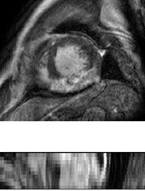

The CMR data from 45 patients, who underwent cardiomyopathy, had been collected from Shanghai
Renji hospital with institutional ethics approval and had been anonymized. Each patient had been scanned using
the three CMR sequences, i.e. the LGE, T2 and bSSFP. The three CMR sequences were all breath-hold, multi-slice,
acquired in the ventricular short-axis views.
(To register, please download "Data Use Agreement Document",
and return the signed version to the organizers. Then we'll get in touch and send you
back the data link.)
Please cite these papers when you use the data for publications.
Training data
Patient 1-5:
LGE CMR (image + manual label) for validation
T2-weight CMR (image + manual label)
bSSFP CMR (image + manual label)
Patient 6-35:
T2-weight CMR (image + manual label)
bSSFP CMR (image + manual label)
Patient 36-45:
T2-weight CMR (only image)
bSSFP CMR (only image)
Test data
Patient 6-45:
LGE CMR (only image)
Gold Standards
In the proposed challenge, we will use manual segmentation as gold-standard for final evaluation of
submitted algorithms. Eventually, we hope that an automated ventricle segmentation method can be
translational to clinical applications.
Manual segmentation of the right and left ventricular, and ventricular myocardium was performed by
trained raters (master or PhD student in BME or medical imaging field), and validated by experts in
cardiac anatomy. The raters employed a brush tool in the software ITK-SNAP in order to manually label
each substructure slice-by-slice. The manual segmentation took about 20 minutes/case.
Evaluation metrics
Dice score, average surface distance and Hausdorff distance will be used as evaluation metrics.
We will evaluate the results using our in-house evaluation software off-line for a fair competition
and comparison. Ranking of the submitted algorithm will be published on the STACOM workshop and
challenge website according to the achieved Dice score and then average surface distance and Hausdorff
distance if same Dice score obtained.
bSSFP CMR
The bSSFP CMR was a balanced steady-state, free precession cine sequence. Since both the LGE and T2
CMR were scanned at the end-diastolic phase, the same cardiac phase of the bSSFP cine data was selected
for this study. The bSSFP images generally consist of 8 to 12 contiguous slices, covering the full
ventricles from the apex to the basal plane of the mitral valve, with some cases having several slices
beyond the ventricles. The typical parameters are as follows, TR/TE: 2.7/1.4 ms; slice thickness: 8-13
mm; inplane resolution: reconstructed into 1.25×1.25 mm.

LGE CMR
The LGE CMR was a T1-weighted, inversion-recovery, gradient-echo sequence, consisting of 10 to 18
slices, covering the main body of the ventricles. The typical parameters are as follows, TR/TE: 3.6/1.8
ms; slice thickness: 5 mm; in-plane resolution: reconstructed into 0.75×0.75 mm.

T2 CMR
The T2 CMR was a T2-weighted, black blood Spectral Presaturation Attenuated Inversion-Recovery (SPAIR)
sequence, generally consisting of a small number of slices. For example, among the 35 cases, 13 have
only three slices, and the others have five (13 subjects), six (8 subjects) or seven (one subject)
slices. The typical parameters are as follows, TR/TE: 2000/90 ms; slice thickness: 12-20 mm; in-plane
resolution: reconstructed into 1.35×1.35 mm